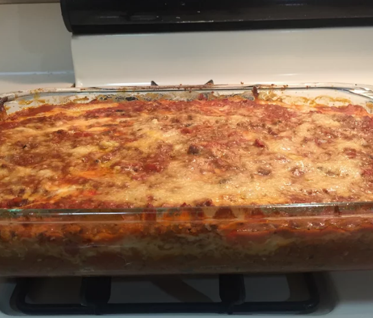

Quinoa Lasagna

Description
Easy, healthier lasagna recipe.
Ingredients
- ¼ cup olive oil
- 1 cup minced onion
- 2 cloves garlic, minced
- 1 pound ground beef
- 2 (8 ounce) cans tomato sauce
- 1 (14.5 ounce) can whole peeled tomatoes, chopped
- 2 teaspoons dried oregano
- 1 teaspoon salt
- 3 cups cooked quinoa, divided
- 1 (8 ounce) container ricotta cheese
- 4 ounces shredded mozzarella cheese
- 4 ounces grated Parmesan cheese
Steps
- Preheat oven to 350 degrees F (175 degrees C).
- Heat olive oil in a large skillet over medium heat. Add onion and garlic; cook and stir until golden brown, about 5
minutes. Add beef; cook and stir until browned, about 5 minutes. Stir in tomato sauce, chopped tomatoes, oregano,
and salt. Simmer sauce until flavors combine, about 10 minutes.
- Spread 1/4 of the sauce in the bottom of a 9x13-inch baking dish. Top with a 1/3 of the quinoa. Drop spoonfuls of
ricotta on top of quinoa, and sprinkle 1/3 of the mozzarella cheese and Parmesan cheese on top. Repeat layers twice
more, ending with sauce and Parmesan cheese on top.
- Bake lasagna in the preheated oven until sauce is bubbly and top is golden, about 35 minutes.